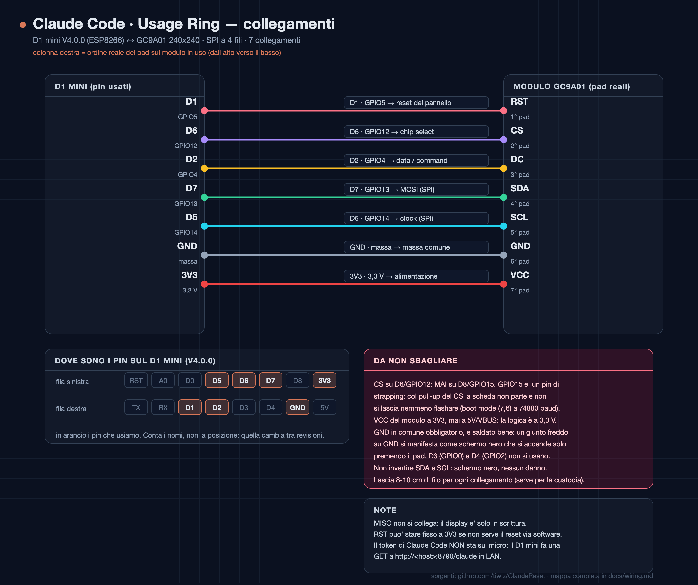

Claude Usage Ring · flasher
Flashes the desk display — ESP8266 D1 mini + round GC9A01 — straight from the browser. No toolchain, no build machine. The WiFi is asked here and sent to the board over the cable: the firmware image contains no credentials.
1 · Deploy the service first
The display is deliberately dumb: it reads the numbers from ClaudeReset, the LAN service that
signs in to Claude, keeps the tokens and refreshes them. Without it the dial can only ever say
non autenticato.
git clone https://github.com/tiwiz/ClaudeReset.git
cd ClaudeReset/service
mkdir -p data && chown 10001:10001 data
docker compose up -d --buildThe service announces itself over mDNS as _claudereset._tcp.
The display finds it on its own — there is no IP address to type anywhere.
2 · Flash the board
Plug the board in with a USB data cable, pick the serial port, and after flashing the dialog asks for the WiFi network: choose the one the display should join (2.4 GHz — the ESP8266 has no 5 GHz radio).
3 · Wire the panel
| Display | D1 mini |
|---|---|
| VCC | 3V3 |
| GND | GND |
| RST | D1 · GPIO5 |
| CS | D6 · GPIO12 |
| DC | D2 · GPIO4 |
| SDA | D7 · GPIO13 (MOSI) |
| SCL | D5 · GPIO14 (SCK) |
MISO is not connected: these panels are write-only. Long version with the panel geometry in docs/wiring.md.

Two things that cost hours
Never put CS on D8 (GPIO15). It is a strapping pin: with the
panel's pull-up holding it high the board does not boot and cannot even be flashed — the error looks
like a broken cable (Timed out waiting for packet header). Use D6 / GPIO12.
A black screen is usually a solder joint, not the code.
VCC and GND are the only pads carrying current: if the panel lights up only
while you press a pad with a probe, resolder it. Symptoms and the colour test are covered by
firmware-test/ in the repository.